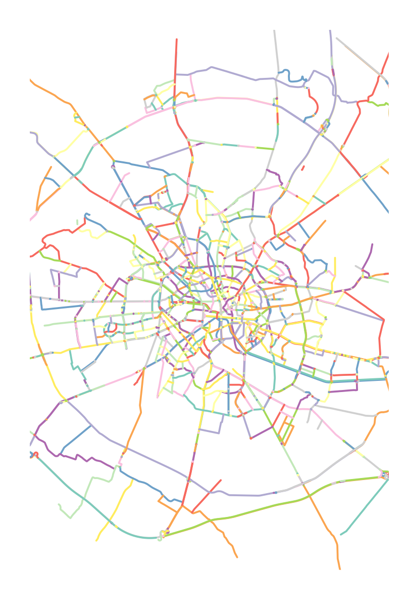

Identify continuous lines in a network using an approach based on the Continuity in Steet Network (COINS) method1.
rcoins is a R (re)implementation of the COINS algorithm, which is also available in Python as a module of the momepy library or in its original version: PratyushTripathy/COINS.
Installation
You can install the released version of rcoins from CRAN with:
install.packages("rcoins")You can install the development version of rcoins from the R terminal like so:
# install.packages("devtools")
devtools::install_github("CityRiverSpaces/rcoins")Alternative installation using conda
An environment including rcoins and all its dependencies can be created using Conda (or its faster implementation Mamba).
Conda can be installed using the Miniforge scripts provided here (download one of the Mambaforge scripts in order to install Mamba as well).
First clone this repository and access it:
git clone https://github.com/CityRiverSpaces/rcoins.git
cd rcoins/Run conda (or mamba, if using Mambaforge) to create an environment with all the required dependencies:
conda env create -f environment.yml
conda activate rcoinsInstall the development version of rcoins (include dependencies = TRUE to install the example datasets):
Rscript -e 'devtools::install(dependencies = TRUE)'Example
Given the street network of the city of Bucharest (data source: OpenStreetMap)
Plot streets
Determine continuous lines in the network as:
Plot continuous streets

Contributing
We look very much forward to contributions to the package. See the Contributing Guide for further details.
This package is released with a Contributor Code of Conduct. By contributing to this project you agree to abide by its terms.
Development
When modifying the R source code, load the library as:
devtools::load_all()Run tests locally:
devtools::test()Run the linter locally:
lintr::lint_package()